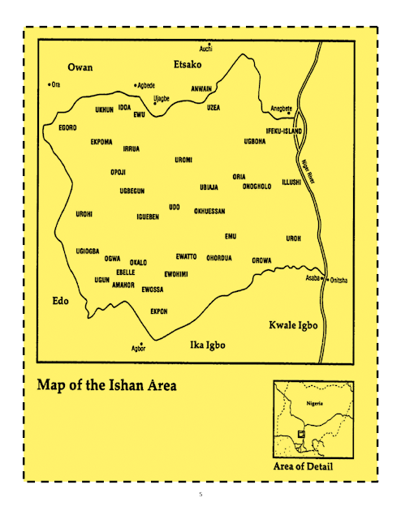
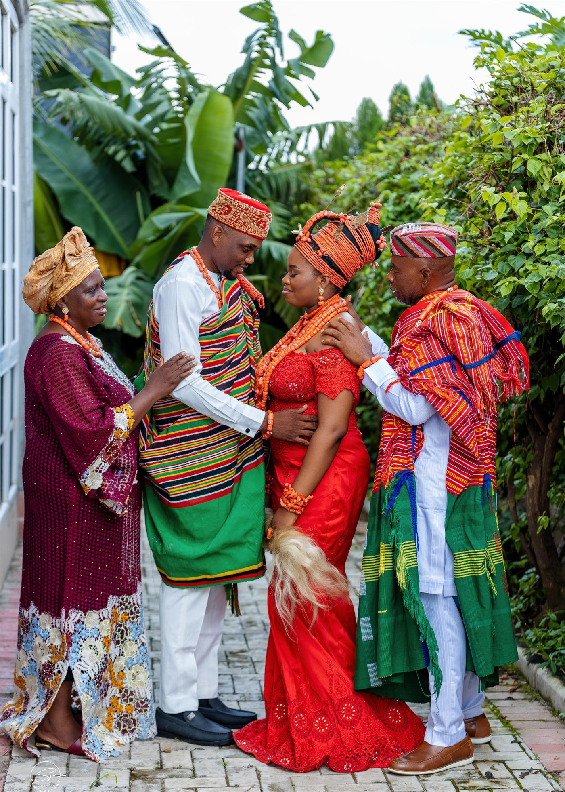
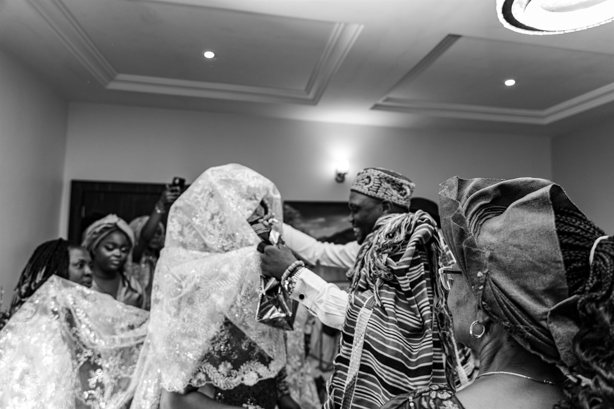
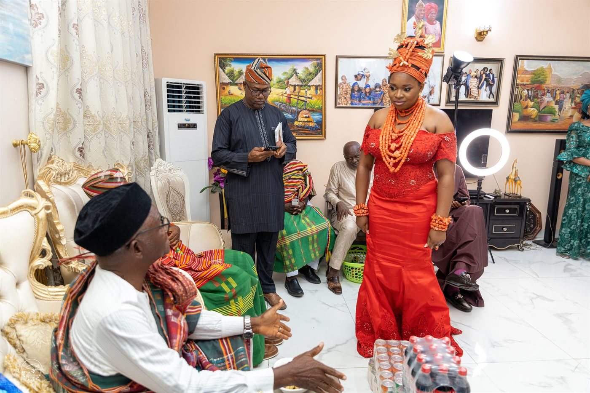
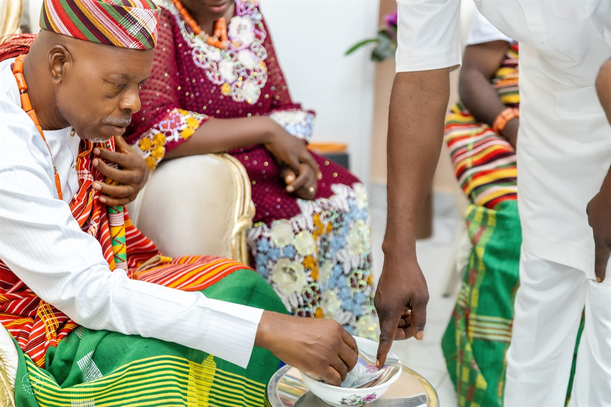
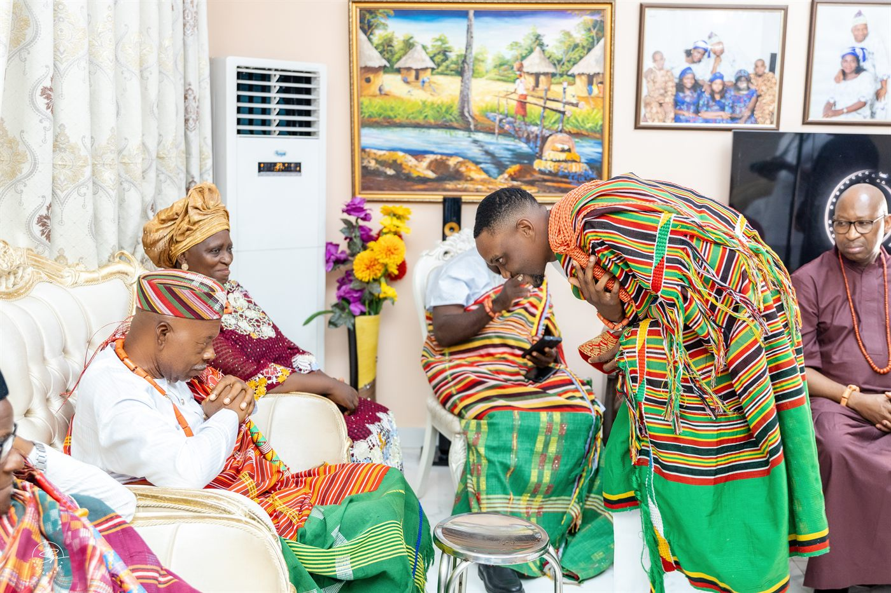
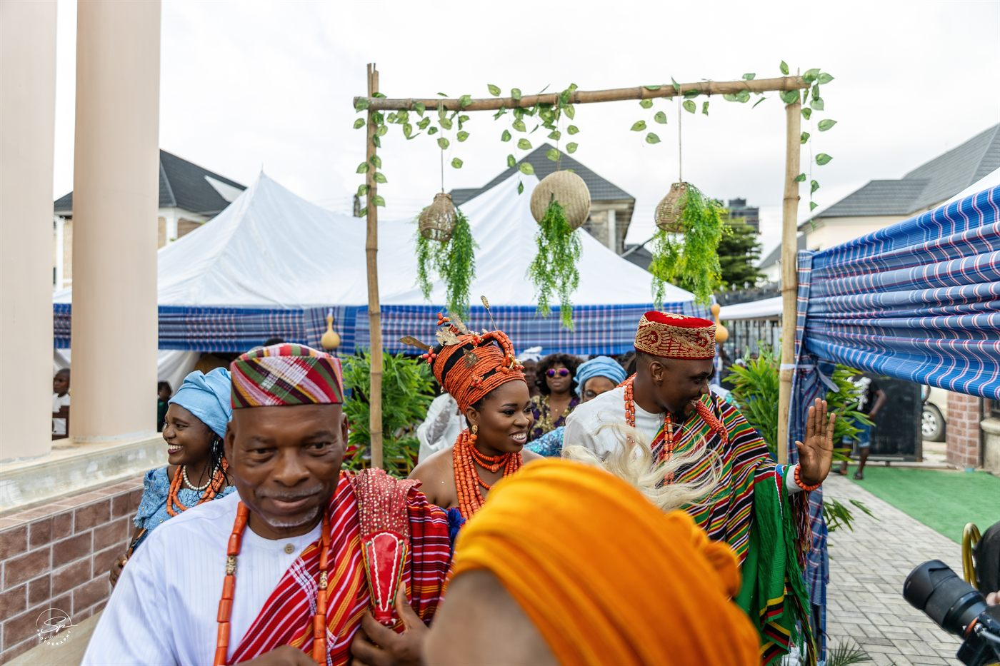
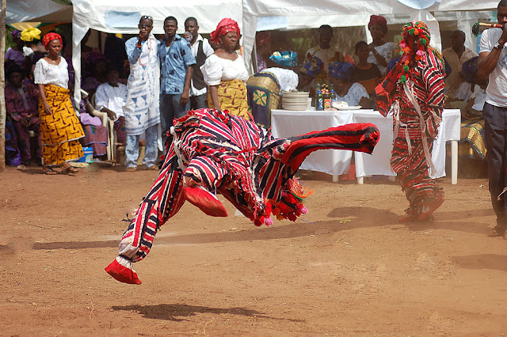
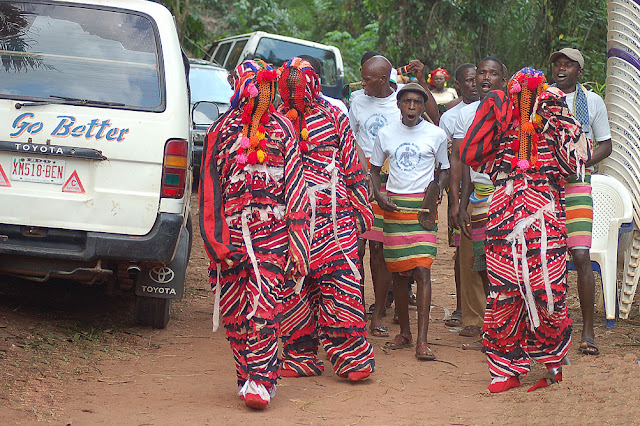

Greeting
Ibhokhamalaen bha bo shan
My people, you are welcome.
A digital humanities learning space
A respectful educational project about Esan culture, memory, language, and everyday forms of knowledge.
This site invites slow attention rather than quick extraction. It introduces learning materials around place, greetings, marriage traditions, language, cultural performance, and ethics while asking visitors to pause before entering.
Thank you for pausing. Your responses were not collected, saved, or sent anywhere. You may now continue through the project materials.
Orientation
The word "Esan" means to jump or flee. Esan customs were passed along generations orally, though many are now being documented. The supplied project notes describe Esanland as a place inhabited by fleeing warriors and other individuals who settled there over time.
Esanland is comprised of sixteen constituents, some of which were established by brothers. Three of these brothers were Irrua (Uruwa), Uromi (Uronmun), and Ekpoma (Ekunma). These constituents practiced similar customs with slight variations.
Esan traditions cover areas such as marriage, social etiquette, markets and economics, religion, health, and justice.
Greeting
My people, you are welcome.
Call and Response
Pronounced "arra"; the response is Obokhian.
Orientation
This project includes an external video resource for visitors who want to continue learning through audiovisual material.
Place
Esanland, located in Edo State, Nigeria, is made up of five Local Government Areas: Esan North-East, Esan Central, Esan West, Esan South-East, and Igueben. Together, these administrative regions form the cultural and geographic heart of the Esan people.

Within each Local Government Area are numerous towns and villages, many of which hold deep historical and cultural significance. These communities are custodians of Esan heritage and living centers where traditions, values, and collective memory continue to thrive.
While Esan people share a common cultural framework expressed through similar customs, beliefs, and social practices, each locality has its own distinct history and identity. These differences are reflected in variations in linguistic phonology, where dialects subtly differ in tone, pronunciation, and expression.
This blend of unity and diversity gives Esanland its unique character: a culturally cohesive region enriched by the distinct voices and histories of its many communities.
Kinship
Marriage is presented here through historical documentation and current traditional practice. Some historical customs described below involved coercion or unequal power; they are included for study, not endorsement.

In Esan land, marriage brings a man and a woman together and also joins two families. From the consummation of the marriage, the associated families are expected to support one another in difficult times and celebrate together during festivities.
Church weddings and court registration are recognized, but traditional marriage remains central and usually comes before any other form of marriage.
The following customs are summarized from the supplied notes as historical practices. They should be read with attention to context, change over time, and ethical concerns.
Betrothal could be arranged between two families before a child was born. Instead of a bride price, the family to whom the child was promised might perform tasks such as helping with farming over several years.
The dowry system was more common among affluent families and could involve a high payment in cowries. The notes also record drawbacks, including cases where a bride resisted the match.
After a husband's death, widows could be inherited by the deceased man's brothers after mourning periods. The notes say elders in some Esan constituents later discouraged the practice because of harmful family incentives.
A man could pledge a child, usually a daughter, as collateral for a loan or unpaid debt. If he could not repay, the child could be married to the creditor.
A young man who wanted to marry a particular girl might work for her family, often on farms, until the family was satisfied and the marriage could take place.
The notes describe strong social restrictions on remarriage after a woman left her husband. They also mention an 1882 occurrence connected to conflict between villages.
The Onojie, or king, could marry multiple women and held exceptional authority in marriage matters. The notes describe royal privilege, bead placement, and the social honor families might associate with a daughter being chosen by the king.
The process below summarizes the current custom as described in the supplied project material.
The prospective bride and groom may meet directly or be introduced by relatives or friends. If both are interested, they inform their parents, who quietly make enquiries about family background, character, health concerns, and possible kinship ties.
If the enquiries are satisfactory, the boy's father or uncle visits the girl's family with a go-between, or Osuomhan. Token gifts may be presented, and the groom's family may receive a list of items for the traditional marriage ceremony.
The list may include kolanuts, spirits, beer, soft drinks, yams, palm oil, salt, a contribution toward entertainment, and money. Bride price is negotiated symbolically; the bride's father takes a token amount and returns the rest to help care for the bride.
The ceremony is festive, with food, drinks, singing, and dancing. The bride may wear a red wrapper and coral beads, while the groom may wear the Esan hand-woven wrapper known as igbulu.
Decoy brides may be presented before the bride is revealed. After ceremonial recognition, eating, drinking, and dancing follow. The bride is later delivered to the groom's family by her aunts and friends.





Speech
Esan tradition, like many indigenous cultures across Nigeria, is deeply rooted in a rich heritage of proverbs, folktales, and customs that are unique to its people.
These cultural expressions emerge from generations of oral tradition, carefully preserved and transmitted by active custodians of the culture within their communities.
Far more than simple storytelling, Esan proverbs and folklore serve as repositories of ethnographic and anthropological knowledge. They preserve historical memory, encode social values, and communicate moral lessons that guide behavior and community life.
These oral forms also function as an indigenous knowledge system, or what might be described as traditional technology. Embedded within folktales and proverbs are practical techniques related to farming, survival, and everyday living. Below are selected Esan proverbs curated from various sources.
Ose ii gba ni usẹnbhokhan.
A young man's beauty is never without defects.
Eji Aah nyẹlẹn ọhle Aah khọ.
People resemble where they live.
Udo ni Aah daghe ọ' vade ii degbi ọrhia bhi ẹlo.
A missile that one sees coming does not blind one.
Eji ọboh da gui otọ ọhle ọle da horiẹ.
A native doctor disappears only where he is used to.
Aah ii ri ebi Aah nanọ bui awa re.
You do not tempt a dog with something to lick, since a dog is an avid licker.
Aah gheghe yọ ni olimhin kha mhẹn bhi ẹlo, ọhle Aah da ri ukpọn bhọ.
Clothing a corpse is simply to beautify it.
Aah ii fi ini bhi otọ kha khin oha-ọtan.
Do not go hunting for squirrel while you have an elephant as a catch.
Aah ii di isira ọnọ khin eni khin ẹkpẹn.
You do not change to a tiger in the presence of one who can change to an elephant.
Amẹn ni ọrhia la muọn ii gbera ọle a.
The water one would drink can never flow past one.
Aah ii yi ọbhẹnbhẹn khui ọkhọh.
Do not ask a mad man to chase fowls away, since he would do it madly.
Ene wwue bhi uwa kha yyọ ele mmin okpodu, ẹbi ene wwuẹ bhi ole ki da ta yẹ.
What would they say who slept outside if those who slept inside complained of harassment?
U'u ii ji Aah gui na.
Death is impervious to appeal.
Ẹwa'ẹn Aah rẹ gbi efẹn nọ ribhi ẹkẹ akhe.
Killing a rat that is holed up inside an earthen pot requires wisdom.
Ufẹmhẹn si obhokhan kha na, Aah ki yọ owualẹn kkani ọhle ni ọle.
When the arrow from a child's bow travels far, an adult is suspected to be responsible.
Ọnọ gbi ọnọdeọde ọhle ọnọdeọde viẹ bhi itolimhin.
In a funeral each mourner mourns the fate that befalls him, not the deceased's.
Ọmọn nọ yyu ọle mhọn ose nẹ.
It is the deceased child that is always the prettiest.
Ohu bha lẹn ebialẹn si ọhle.
Fury does not know its owner's strength; otherwise a weakling's rage would be tempered with restraint.
Agbọn khi ese.
It is human beings that do disguise as supernatural forces.
Ọnọ ii ribhi eni, ọle Aah ri enyan si ọle tọn bhi egbi era'ẹn.
It is the absent one whose yam would always be kept beside the fire.
Eto kha rẹ re, Aah yẹ lẹn eji ukẹhae nae.
No matter how hairy the head becomes, the forehead remains distinct.
Cultural Performance
Igbabonilimhin (Uromi dialect) or Ikhien Alimhin (Ubiaza dialect) is an Esan acrobatic dance with colorful costumes enacted by the Esan people in Nigeria. Historically, it was a ceremony that was enacted periodically in every village in Esan land once a month. It is also a staple in every major ceremony, like the New Yam festival. The act is very sacred and secret, as the acrobats are not actually people but 'spirits' that emerge to enact the dance for the people. Historically, once the spirits were out, women were not allowed to come out during the day, as it was believed that they would go barren if they saw them. Now, the dance can be witnessed in various Esan towns during Christmas time. More information on the spirits, such as their appearance and recession, cannot be publicly known, because it is esoteric knowledge known to only elders and the initiates.


About / Ethics / Governance
This page explains the project values that shape the site.
The entry threshold asks visitors to pause before consuming cultural material. It frames learning as a relationship of attention, humility, and responsibility.
The project resists digital habits that turn culture into content to be skimmed, copied, or taken out of context. Its slower structure encourages reflection before access.
Visitor responses in the entry modal are not collected, stored, transmitted, analyzed, or saved in the browser. They exist only on screen to encourage private reflection.
This is an educational course project. It uses curated course material and should be expanded only through careful review, attribution, and governance.
Cultural representation should be approached with caution, respect, and accountability. Future versions should identify who has authority to review materials, what knowledge should remain private, and how corrections or concerns can be raised.
Reflective Entry
Your responses are not collected, stored, sent, or saved. They are only here to encourage reflection before entering the site.